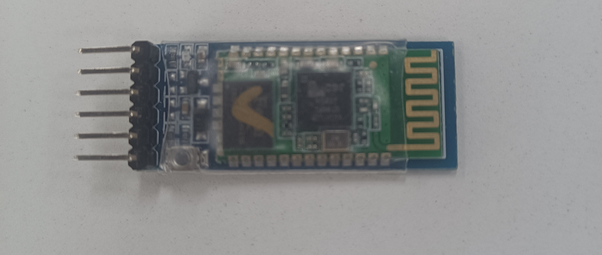
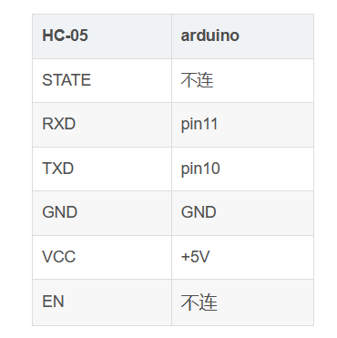
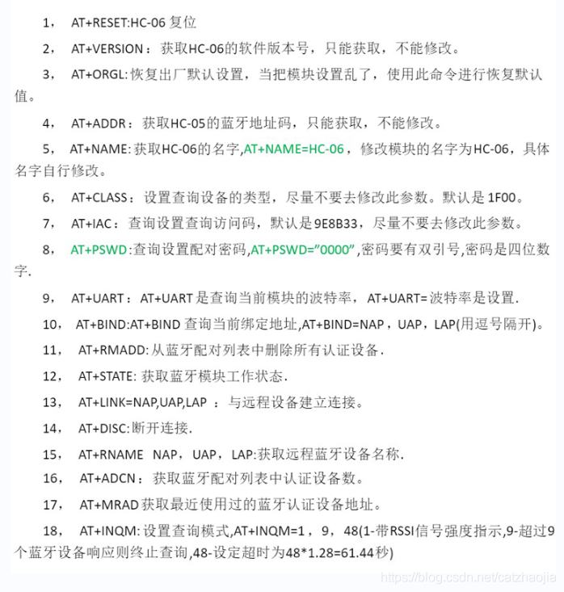

Arduino+蓝牙初尝试
使用Arduino连接蓝牙，并使用手机收发数据
师兄给的这个不知道是哪个型号的蓝牙模块，长得跟HC-05有点像但又不是，不过经测试，使用方法跟HC-05一致。主要参考Arduino连接蓝牙（HC-05）和【常用模块】HC-05蓝牙串口通信模块使用详解（实例：手机蓝牙控制STM32单片机）
连接方式
连接方式如下
样例代码
1 |
|
AT配置
烧入Arduino后，我们如果是第一次使用，要对蓝牙模块进行配置，根据这篇博客的说法，需要进入命令响应模式
蓝牙模块的调试
HC-05蓝牙串口通讯模块具有两种工作模式：命令响应工作模式和自动连接工作模式。在自动连接工作模式下模块又可分为主（Master）、从（Slave）和回环（Loopback）三种工作角色。
当模块处于自动连接工作模式时，将自动根据事先设定的方式连接的数据传输；
当模块处于命令响应工作模式时能执行AT命令，用户可向模块发送各种AT 指令，为模块设定控制参数或发布控制命令。
怎么进入命令响应工作模式？
进入命令响应工作模式有两种方法：
模块上电，未配对情况下就是AT模式，波特率为模块本身的波特率，默认：9600，发送一次AT指令时需要置高一次PIO11；
PIO11 置高电平后，再给模块上电，此时模块进入AT 模式，波特率固定为：38400，可以直接发送AT指令。
什么叫做置高一次PIO11？
在蓝牙模块中有一个小按键，按一下就置高一次PIO11。也就是说，第一种方法需要每发送一次AT指令按一次；而第二种方式是长按的过程中上电，之后就无需再管了，直接发送AT命令即可。
需要注意一下，两种进入命令响应工作模式的方式使用的波特率是不一样的，建议使用第二种方式。
简单来讲，就是先给Arduino断电，然后按住蓝牙模块按钮的同时再给Arduino上电即可。
配置方法是打开arduino的串口监视器，右下角设置为NL和CR，波特率38400，然后在输入框中输入指令即可。
主要用到的指令有获取和设置名字、查询和设置配对密码、查询和设置波特率，其它指令可以自行尝试。
调试
接着我们要用到一款手机软件（没找到电脑调试的）“蓝牙调试器”，图标如图所示，可以到手机的软件商城或者浏览器自行搜索下载。其它软件大同小异，过程就是搜索蓝牙，连接HC-05，然后在手机和电脑的串口各自发送数据并查看接受情况